Our second If Wet of the season saw us hosting a special event in our home village hall. In fact, for various reasons, it is the only event we have planned to take place in our village hall this year.
Late last year, John Doran of The Quietus got in touch to ask about us hosting him for an event as part of his tour, to launch his new book Jolly Lad. We weren’t entirely sure how this fitted with a standard If Wet but we thought we’d go for it; in part to just keep bringing exciting stuff to Callow End.
As John intended to perform readings from his book, accompanied by music from Arabrot, we decided the emphasis would be more on performance than usual at an If Wet. We also decided to try and find a selection of artists for whom storytelling was central to their work. The wonderful Sarah Angliss immediately sprang to mind but we wanted to have two further artists to accompany John and Arabrot. David and I chatted and he reminded me of Josephine Dickinson, who we had met when running If Wet at Bardsea Malt Kiln last year. I got in touch with her, and her enthusiasm to be involved was palpable…so that was our line-up sorted!
Tickets sold well and we were delighted to have a great turnout on the day as well; The hall was as full as it has ever been for an If Wet. We started by setting the scene and briefly demonstrating the headset for our latest project Amplification, before handing over to Josephine for her delightful talk, which covered studying under the tutelage of Michael Finnissy and going mushroom picking with John Cage.
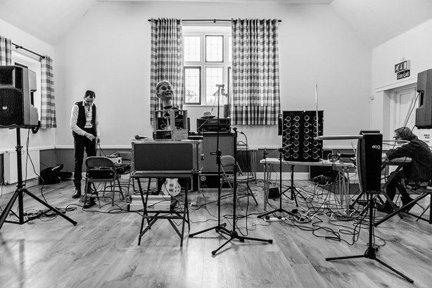
Setting up.
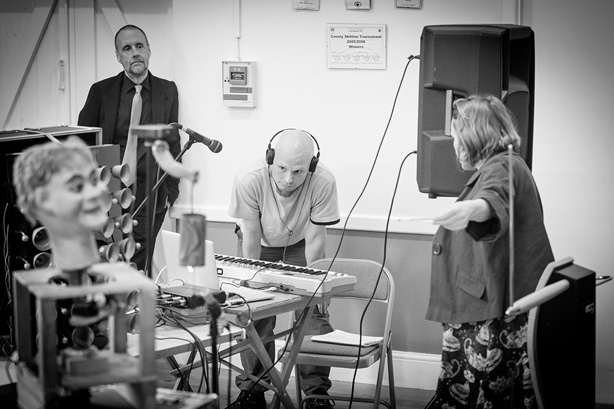
Sarah testing. Sam helping. David supervising.
Josephine prepares.
Sarah prepares.
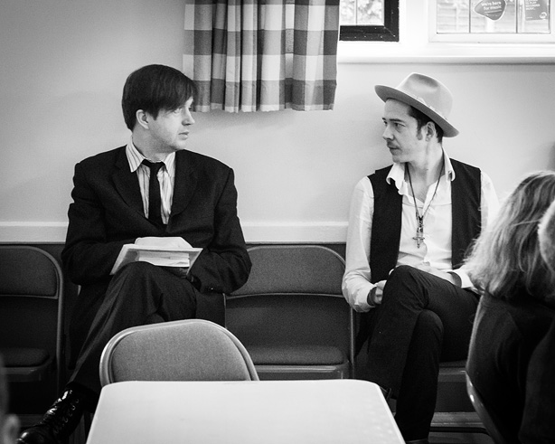
John and Arabrot prepare.
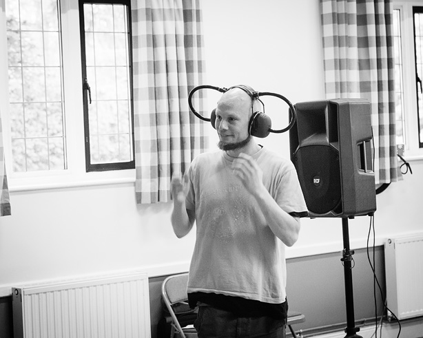
Sam with Amplification headset.
Josephine speaks.
Josephine speaks.
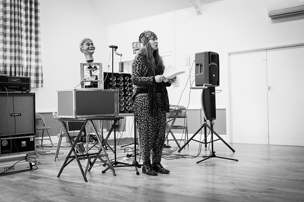
Josephine speaks.
Josephine speaks, to a full house.
Josephine soaks up the generous applause.
Next up we had Sarah Angliss, who was a delight to behold, as ever.
Sarah and Hugo.
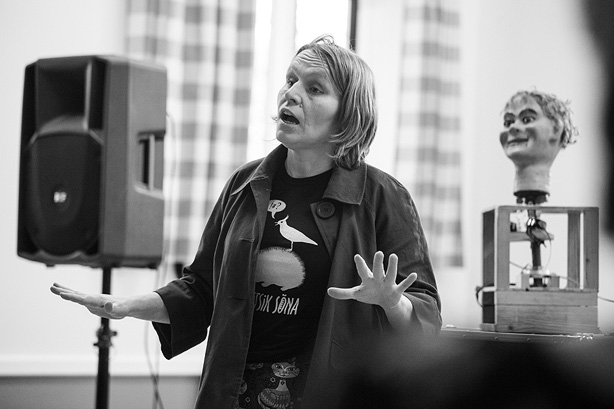
Sarah speaks.
Sarah speaks.
Sarah plays her recorder.
Lastly it was over to John Doran and Arabrot. John read from his book; Arabrot created ambient soundscapes in accompaniment. Wonderful stuff!
John reads.
Arabrot performs.
John and Arabrot.
Arabrot tweaks.
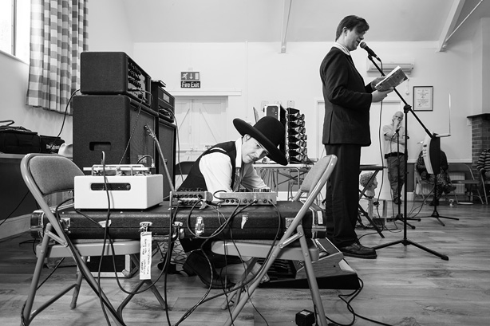
John and Arabrot.
John reads.
John takes questions.
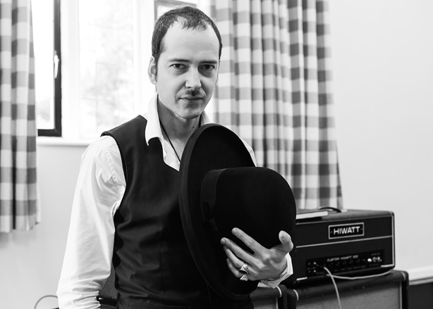
Arabrot.
Thank you to our artists and to all who attended for making this such a wonderful experience! Callow End Village Hall has never witnessed anything quite like that…
Many thanks to George Benson for the wonderful photographs!
We are firm in the belief that any decision we make regarding our projects is open to review at a later date, and when we came to assess our plans for our third season of monthly If Wet events in the village hall we decided we would put these on ice; and save our Kickstarter cherry for another day. There are various reasons for this decision but central to it is the fact that doing a regular event each month is really time-consuming and energy-sapping. If Wet was intended to drive our own making, for demonstration at the events, but the regular monthly events actually stifled our own building of stuff in 2014; so for now we have put them on hold.
This doesn’t mean an end to If Wet events in 2015. In fact, we have a few really exciting events lined up already and we are looking for more. Here are some dates for your diaries:
If Wet at Maker Faire Saturday 25th – Sunday 26th April
A series of If Wet demonstrations and performances over the two days of the festival, taking place at the Centre for Life, Newcastle upon Tyne.
If Wet hosts John Doran Sunday 10th May
An all-day special event in our home venue of Callow End Village Hall. Including an If Wet salon, followed by an event featuring Arabrot performing an ambient set featuring John Doran reading from his new book Jolly Lad, due out early May on Strange Attractor Press. Yes, this is happening in Callow End!
If Wet at Three Choirs+ Thursday 30th July
A one-off If Wet event on the Theremin as part of the Three Choirs+ programme in Hereford. Further details soon.
If Wet at Worcester Music Festival Sunday 20th September
Plans are afoot for If Wet to revisit Worcester Music Festival (and hopefully the glorious Quaker Friends Meeting House) for the second year running.
There are a couple more events in the offing and we welcome anyone getting in touch if you’d like to discuss us programming and hosting an If Wet as part of your event, wherever you are in the world!
We also started a regular monthly radio programme on Sound Art Radio in December 2014, which is broadcast on the last Sunday of the month from 2-4pm; each programme featuring a different musical instrument. More information on that here: radio.ifwet.org.uk
We welcome any suggestions for the radio show and we look forward to seeing you at an If Wet in 2015!
As our Season #2 finale, If Wet #20 was never going to run totally smoothly. Last year’s finale event was delayed by a bouncy castle, so we had form. For this event, our main presenting artist, Rosanne Robertson, was severely delayed so we had to busk it somewhat.
Luckily, we had invited all of the artists from our second season to come along as our guests and some of them turned up with stuff to present. We also had a couple of great Run What Ya Brung presentations so we were kept very busy until Rosanne arrived.
After Rosanne’s wonderful presentation/performance we had a section where we read out or played back responses to If Wet from all the artists who presented in 2014. This was lovely, so we have documented that below too.
Thank you to everyone for your support this year. We have some [Kickstarter] plans for next season and we are running a radio show (starting on 28th December, 2-4pm) in the meantime. It has been a really lovely year for us.
Thank you for coming down to the hall! X
The Dynamic Duo, introducing our last If Wet of Season #2
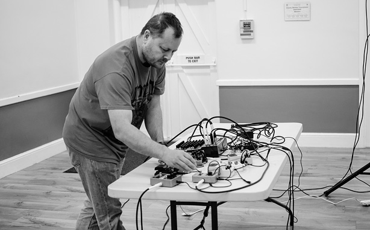
Alan Stephen demonstrating no-input mixing (RWYB)
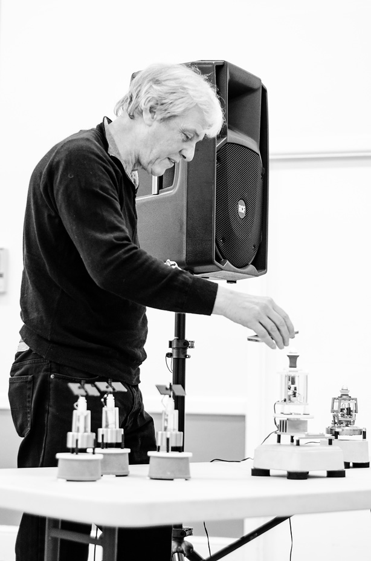
Richard Windley demonstrating his latest noisy units (RWYB)
Richard Windley’s latest noisy units
Paul Gittins setting up his latest addition to his Oak Apple Orchestra
Paul Gittins setting up his latest addition to his Oak Apple Orchestra
Tim Cranmore inspecting Paul’s Oak Apple Orchestra tin can instrument
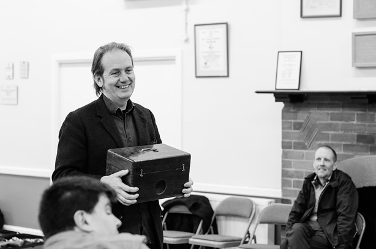
Ray Lee demonstrating an Ethometric instrument
Stavroula Kounadea discussing the Ethometric Museum
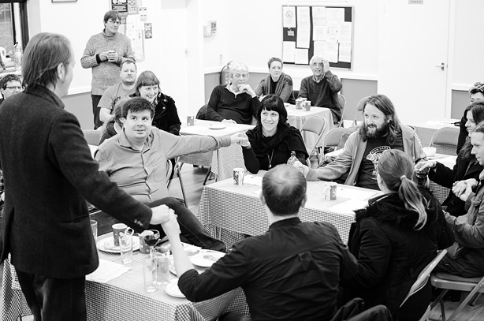
Joining hands to activate the Ethometric instrument
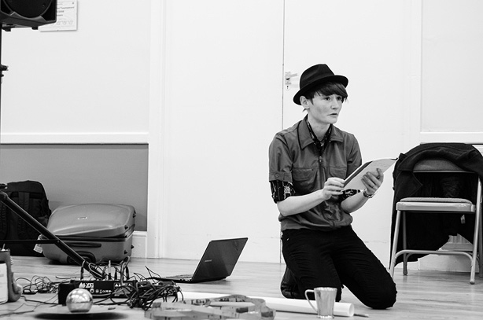
Rosanne Roberts reading from her book of found conversation
Rosanne Roberts making noise
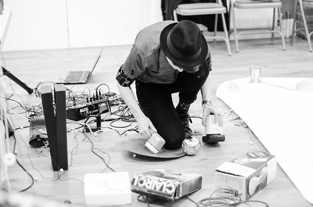
Rosanne Roberts making noise
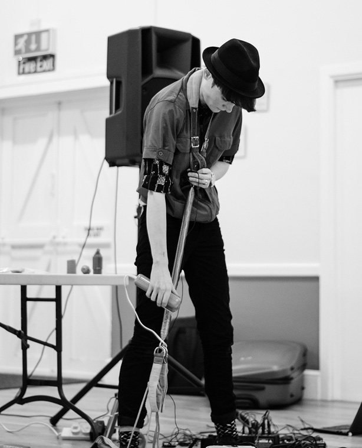
Rosanne Roberts making noise
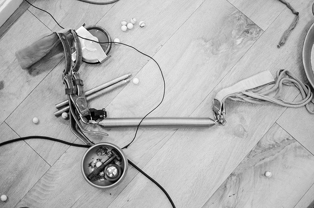
Rosanne Roberts’ instruments
———————
As mentioned we asked all Season #2 artists to attend or send us a response of some kind regarding their experience of If Wet. Here they are:
FLATPACK Sebastian Hegarty
I had a great day with If Wet at the Flatpack Festival, Birmingham. Got to hear the water instrument and the wet acoustics of Trevor Cox with his wave organs, dripping stalactites and subterranean oil reservoir: Lovely people, fascinating ideas and spoiled ears. Thank you very much Sam and David.
Distant Voices: Still Raining is a short damp apology for not being there (If Wet #20). The sound includes the remains of rainfall as it drip-drops through guttering and a short soliloquy in a fragment of voice taken from a telephone conversation with my lovely mam. The piece concludes with the song, I Get the Blues, filched from Terence Davies wonderful film, Distant Voices/Still Lives.
Trevor Cox
I can think of nothing more appropriate for If Wet then to send a sound effect for everyone to enjoy.
It is from a trip to an Oslo train station. This is me chatting in the space so people can hear the effect and it describes what is going on:
And here is a balloon burst, that brings out the warble:
The secret behind the warble is that this is space made from two half-cylinders of different radius connected together.
SUPERSONIC Ryan Jordan
Enclosed his press release: “these practitioners practice dark hypnosis in psychoactive hyperventilation clubs”
Sarah Kenchington
sorry not to reply sooner , I have been a bit gobbled up by my new job working in a chocolate factory.
If wet was great super friendly and interesting. Sorry I won’t be able to make it to Callow End, sounds spooky.
A few weeks before if wet I had been to a car boot sale, and found a rather amazing pedal powered fret saw, I did my usual thing, instead of rehearsing I built a new instrument, I converted the fret saw into a machine to bow my violin. The first gig we did in front of maniac children it didn’t work and then at the If Wet gig it worked like a dream and I pretended I was a virtuoso violin player. Everyone believed me. I also included a bath tub for the first time in my orchestra. Since then I have been using the bath full of water. Getting right into watery trumpet sounds Perhaps you could play the thing I did on the Isle of Eigg. I thought it would be appropriate for an If Wet event .Wet as anything it is.
Graham Dunning
In the spirit of If Wet me and Leslie decided to make an instrument and make some sounds with it. I had a wooden box with a lid knocking about and we bought some other bits and bobs from the local 98p Store. We recorded the whole process of making and experimenting as we went, with a nod to Robert Morris’ Box With The Sound of Its Own Making – the intention was to edit that down to a short piece for you to play.
TOUR Sompting Village Hall Leslie Deere
See above w/ Graham Dunning.
Sarah Angliss
Fitzhead Tythe Barn Jules Bushell
“It was great fun and fascinating to meet other makers and sonic explorers at ‘If Wet’. An opportunity to meet other likeminded individuals, and a relief to realise there are people out there with similar interests. You are not alone! A chance to share ideas and take contraptions out of the workshop, even if they are still works in progress. Thanks guys, have fun, sorry not to join you there!”
Hacker Farm
Here ya go – this is what 6.00am in my house sounded like this morning.
And a separate message from KEK
“Hey. Thanks for the 2014 village-hall invite, IF-WETTERS; really enjoyed scrrra-a-a-a-aping the HTML from your website and turning it into MIDI-file music. Never played a musical web-page before. Digging those Tuh-tuh-text squirts, man; it’s the New Serialism”
Bardsea Malt Kiln Hugs Bison
Lee Patterson (1st)
As always, I’m on the last minute, in fact it’s a wonder I made it to either of the If Wet events that I contributed to this year – Bardsea and Callow End… Anyhow, both events reminded me that, despite the isolated way in which we may consume and produce music, music always has a social element – whether implied or actual and opportunities to share with like minds are increasingly rare. So, Sam, David – keep up the good work at Callow End and elsewhere!
Right, got to rush to catch a train to Huddersfield!
Callow End Village Hall Paddy Steer
Callow End Village Hall Lee Patterson (2nd)
See above.
Worcester Music Festival Paul Gittins Present
Ray Lee and Stav Present
Callow End Village Hall Sarah Nicolls
I loved being at If Wet: an intelligent, friendly and totally engaged audience. It was a really useful and genuinely fun and encouraging experience.
Callow End Village Hall Pete Ashton Present
Ben Gwilliam
If wet? not as much as it would be where I live, callow end hall dry n all.
Thanks very much for the opportunity to try out elements of current works, that although they are incomplete, at if wet I can test the metal of the idea and importantly the way it sounds.
As much as I try out sound as music, you gave me an opportunity to test visual work that confirms for me the direction that making stuff like this does: always in the opposite of what everything else is!
So I wish you all the best for this last one of the season, I do hope that season three makes it round swiftly next year. Every town should have a collective space for discussion, presentation & banter on artists work that is as informal & invaluable as if wet. Doing these activities keep the arts real. So continue to keep it real.
Here are a few pictures from If Wet #19, which featured two visiting artists. We were delighted to welcome Pete Ashton and Ben Gwilliam to present their latest work.
Our next event is our last of this season, featuring Rosanne Robertson! We aren’t having a big end-of-year event this year but we are planning to head to the pub to celebrate another season afterwards! JOIN US. Oh and, we have scribbled some notes on the back of a blog post regarding our plans for next year.
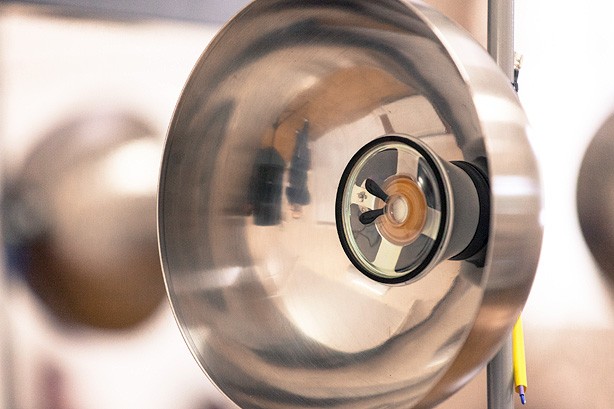
The odd speaker pods of our light-responsive Sonic Graffiti pieces
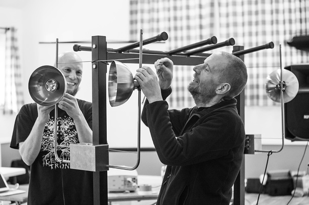
Starting up our light-responsive Sonic Graffiti pieces
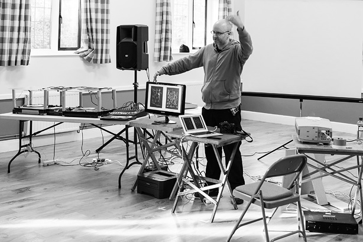
Pete demonstrating slit-scanning
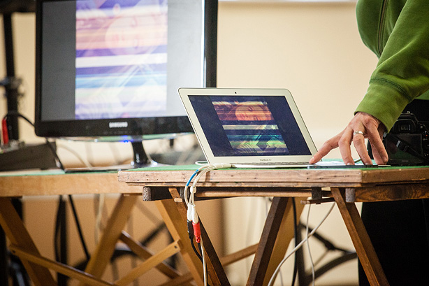
Pete demonstrating his selfie project
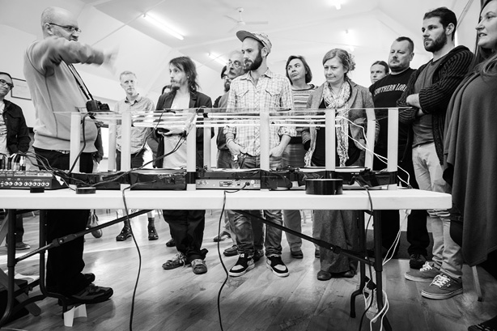
Pete demonstrating his Live Sonification of Photography, using images taken at If Wet
Ben demonstrating an early prototype of his latest piece
Ben’s long-form video and sound piece
Very rarely we had no Run What Ya Brung contributions this month, and ran to time!
Thank you to our guest and to all that made it down. Thanks to Team Joory for the wonderful catering and to Francis for the great cakes. Oh and St. George’s for the cracking beer. AND cheers to George Benson for taking these pictures – except those of Ben, which Our David took. Who did we miss!?
Here are a few pictures from If Wet #18, which took place back in our home of Callow End Village Hall with the wonderful Sarah Nicolls talking about her Inside-Out Piano, and another great contribution from our regular Run What Ya Brunger, Richard Windley.
Our next event is our penultimate of this season, featuring Ben Gwilliam and Pete Ashton! JOIN US.
Sam demonstrating the spacial aspects of our Futuro Mantra sound art boxes
David and Sam, chuckling
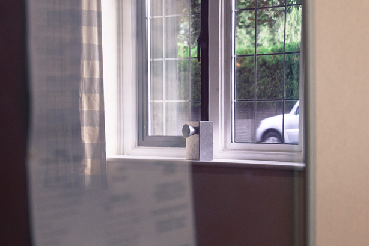
Futuro Mantra box
Futuro Mantra boxes
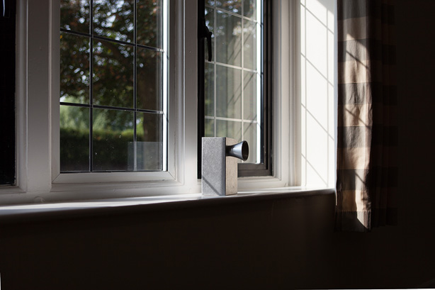
Futuro Mantra box
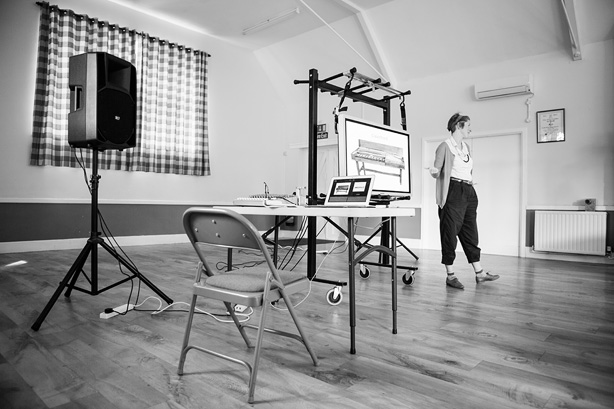
Sarah Nicolls introducing the background to her Inside-Out Piano
Sarah Nicolls helping us all experience what leaning inside a grand piano is like
Sarah Nicolls presenting her Inside-Out Piano
Sarah Nicolls providing a unique insight into her latest show
Sarah Nicolls providing a unique insight into her latest show
Sarah Nicolls providing a unique insight into her latest show
Richard Windley presenting his LED light and sound display, as a RWYB.
Cheers to George Benson for taking these pictures – except that of Richard Windley, which Sam took on his phone because George needed to dash…
Here are a few pictures from If Wet #17, which took place at the Quaker Friends Meeting House in Worcester, as part of Worcester Music Festival. We are very grateful to our hosts, our audience and our wonderful presenters!
Next up, this Sunday, we are back in Callow End Village Hall for If Wet #18, with Sarah Kingdom Nicolls, taking us Inside the Inside-Out Piano. JOIN US.
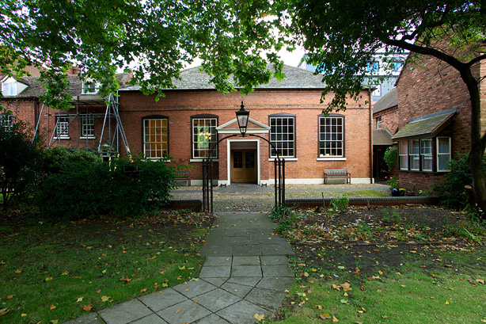
Quaker Friends Meeting House, Worcester
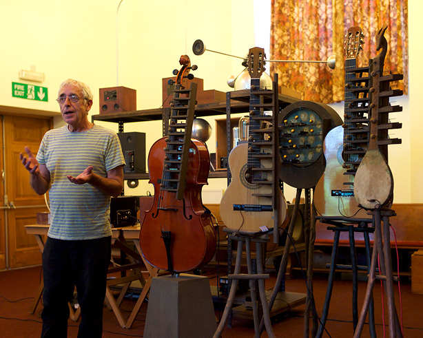
Paul Gittins describing his Oak Apple Orchestra
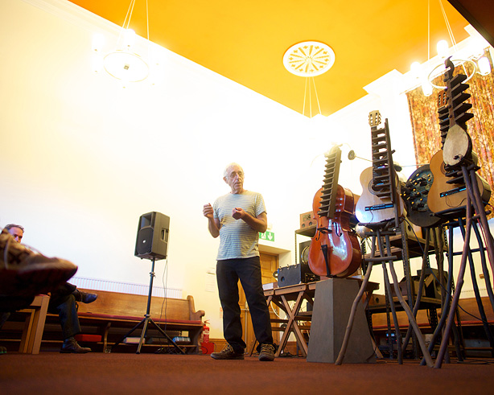
Paul Gittins describing his Oak Apple Orchestra
Paul Gittins describing his Bakelite and oak apple visuals
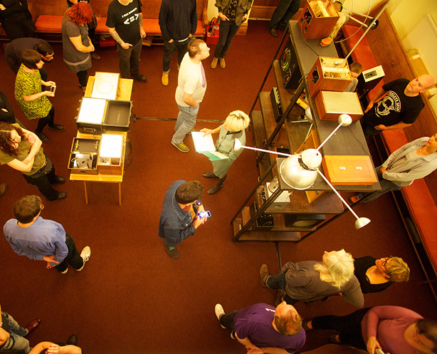
Stavroula Kounadea introducing Ethometric Museum
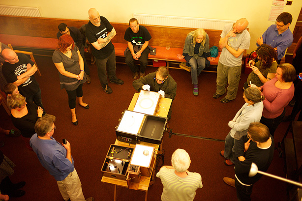
Ray Lee conducing Ethometric Museum
Ray Lee conducing Ethometric Museum
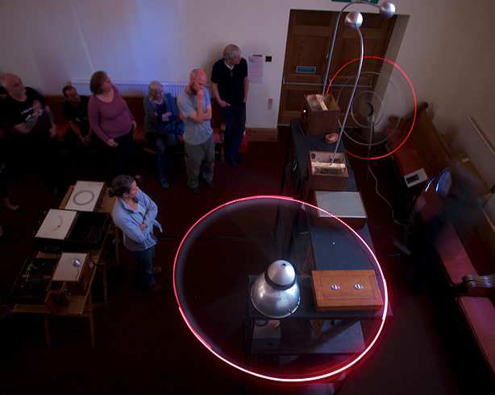
Ray Lee conducing Ethometric Museum
Ray Lee and Stavroula Kounadea discussing Ethometric Museum
Cheers to our David (Morton) for taking pics that day!
Here are a few pictures from If Wet #16. Wonderful stuff once again from Lee Patterson, all in front of a typically enthusiastic and engaged audience…thank you!
Here is a preview of our next event, featuring Ray Lee and Stavroula Kounadea, and Paul Gittins – as part of Worcester Music Festival on the 31st August. JOIN US.
Here are a few pictures from the second weekend of our If Wet 2014 Tour. Wonderful presentations by wonderful artists [thank you!], to an enthusiastic and engaged audience…
It was a wonderful experience and great to resolve the tour in our home of Callow End Village Hall, for the first of our 2014 regular monthly events. Now back on the last Sunday of the month in our hall [except August, which will take place as part of Worcester Music Festival]! Here is a preview of our next event, featuring the wonderful Lee Patterson. JOIN US.
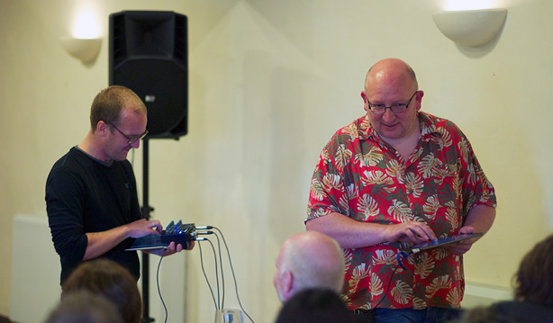
Hugs Bison at Bardsea Malt Kiln
Lee Patterson at Bardsea Malt Kiln
Run What Ya Brung #1 at Bardsea Malt Kiln
Run What Ya Brung #2 at Bardsea Malt Kiln
Stage set at Callow End Village Hall
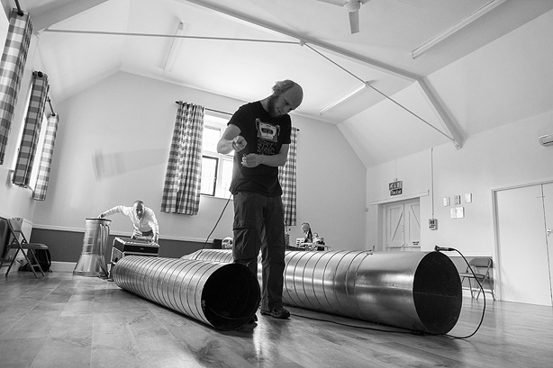
MortonUnderwood Giant Feedback Organ at Callow End Village Hall
Paddy Steer at Callow End Village Hall
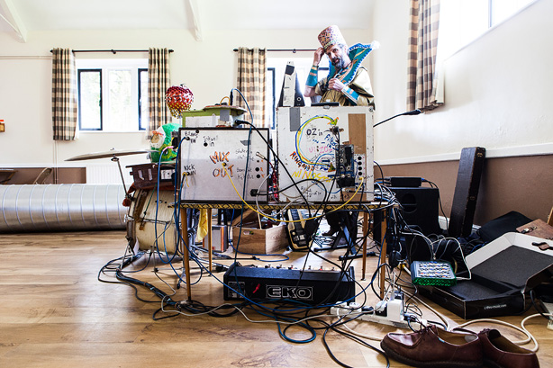
Paddy Steer at Callow End Village Hall
Run What Ya Brung #1 at Callow End Village Hall
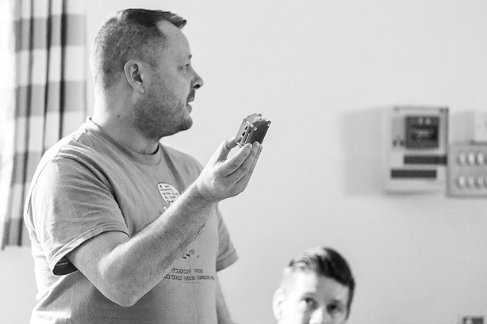
Run What Ya Brung #2 at Callow End Village Hall
Audience at Callow End Village Hall
Many thanks to George Benson for the photographs of our Callow End Village Hall event.
All other photographs by David Morton.
We did it! From what started as a bit of experiment, we seemed to build some momentum over our first season, topped off by our Season Finale and Fundraiser event at the end of November 2013. It was a stressful event, due in part to this, but it also felt like a triumphant celebration of all we had achieved in our first season. Many fond memories, and we even raised some money.
We would like to thank everyone who made our first season and fundraiser a success. People were generous beyond our wildest expectations. Below is a picture of Sarah Angliss playing at our fundraiser. Sarah has supported throughout but our thanks extend to so many people that we aren’t even going to attempt a list. Hopefully you know who you are, we certainly do.
Our fundraising efforts raised just over £1200. Not bad for a sound art event in a rural village hall. Read on to find out what 2014 holds.
Onward
In order to make this sustainable, we have set a budget of £400 for each If Wet. Therefore the funds we have raised so far will cover three events in the village hall in 2014. We are now looking for funding for additional events in this our home venue. We hope that potential funders will see the effort and outcomes of our first season and will be willing to match our own fundraising. We’ll see. We’d certainly love to do more events in our hall this year, since this is where the heart of If Wet lies.
Once we see how we get on with our search for funding, we will define our programme at Callow End Village Hall, but for now we just wanted to provide this update and statement of intent.
Also, If Wet has grown wings and will take flight in 2014, stopping to perch at a variety of venues – occasionally with a subtly different format. First up, we have been asked by Flatpack Festival to host an If Wet as part of their festival this year. The second If Wet outing of the year will be the Southbank Centre, when we host a Meet The Makers event. Then we are talking with Capsule about a potentially very exciting event in April. More details on all of these soon but we are delighted to be keeping such fabulous company!
AND we secured funding through Sound and Music, which will see us tour some village halls this year.
If Wet #7 is our last fully documented event of the year, as for our fundraiser we decided to enjoy ourselves in celebration of our first season. Here is the full audio recording, in two parts: Part1 / Part2
Here’s an overview of what went on, so you can access topics of interest:
Welcome
Photo: Pete Ashton
MortonUnderwood present…
[1:30 – 22:05 | Part 1]
“The main reason that it’s in a trolley is that if you move this trolley around, as you move over differently reflective areas it changes pitch.”
“Getting the backing off the tape proved to be the most challenging thing because Sam has got no fingernails and I’ve got bad eyesight.”
“What we have done is take the optical reader for the synth and put it under the trolley, and then any design on the floor sequences the sound as you move it across it.”
Photo: Pete Ashton
“David insisted on this humiliation for me on a regular basis.”
[Sam talking about completing a touch circuit using Sam’s head – pictured above]
“The reaction from the public was ‘this is really fascinating’. […] Now I wouldn’t have expected that reaction but it was a solid repeated reaction. They don’t know what contact mics sound like.”
[David talking about the addition of a contact mic to the underside of the trolley top]
Ian Rawes
[20:05 – 1:03:00 | Part 1]
First we welcomed Ian Rawes of the British Library Sound Archive and London Sound Survey to present a series of fascinating archival recordings.
Photo: Pete Ashton
“They are called transcriptions discs. They are old 78 RPM discs and they’ve got programmes and out-takes, and some things which were never broadcast at all. […] The BBC don’t actually know about a lot of these things, or they’ve forgotten about them. When I first came across them I was very excited because you hear another world of sound.”
“I am interested in the sounds of everyday life, not really the great and the good being interviewed, which is what the vast majority of the old recordings are.”
“The earliest microphones or recording equipment was very insensitive to sound. […] They are always shouting; you get the impression people were very angry or very emphatic.”
Photo: Pete Ashton
“The very oldest, surviving public recording in Britain […] is from Crystal Palace in 1888. […] Handel’s Messiah performed by a 4000-strong choir. […] It has a certain quality as you will hear.”
[Ian describing the remarkable recording which begins at 01:00:30]
Helen White
[00:10 – 30:05 | Part 2]
Our final presentation of 2013, was by Helen White who brought along her wonderful solar-wind chime to show us.
Photo: Pete Ashton
“It’s a solar-wind chime that gathers data from the sun. It’s not everyday that you look at data from satellites and turn it into magnetic resonance, so I will try to explain how we got there.”
“The sun is ninety-three million miles away and it’s spewing charred particles at us all the time. […] These particles have different effects depending on all sorts of properties in them.”
“The three characters of the solar wind are: its speed, its density and the magnetic direction that the particles are facing. […] That’s what this piece of work focusses on; it reads the speed of the wind and interprets it through a series of sounds.”
“The data comes from a satellite called ACE.”
Photo: Pete Ashton
“I love the idea that it can be so gentle and subtle. In fact, I had this on my desk, it was playing and I switched off from it. It was kind of like that ticking clock, it just disappears.”
Run What Ya Brung
We run a regular feature at If Wet in which members of the audience are invited to bring along and demonstrate instruments, sound objects and sonic oddities. For the first time nobody presented anything in this section, in part due to our regular contributors being away. A shame but this did result in is another first; we finished on time!
________________________________________
The full set of Pete’s photographs of If Wet are available here.
A huge thank you to: Everyone who presented! Everyone who engaged and provided feedback. Everyone who came. Kavita for cooking, running the bar and tidying up. Petefor taking photographs.